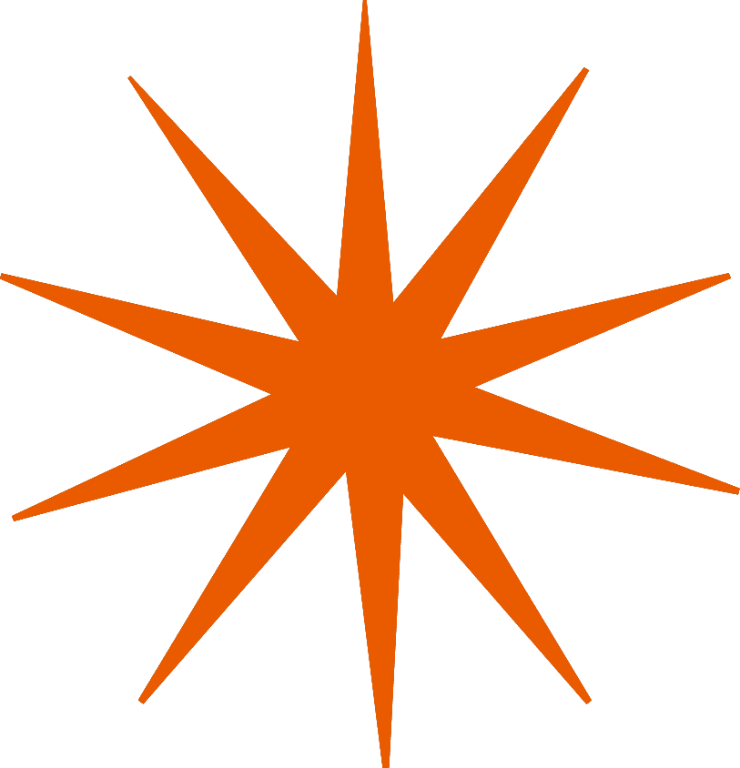
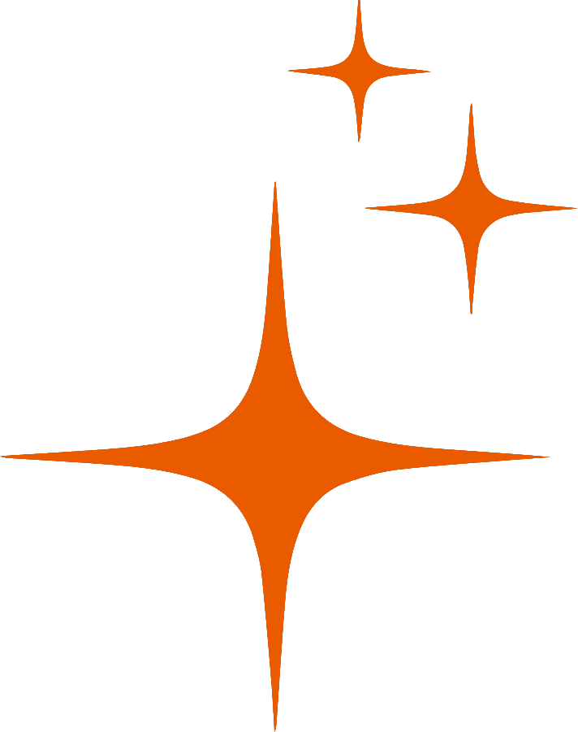
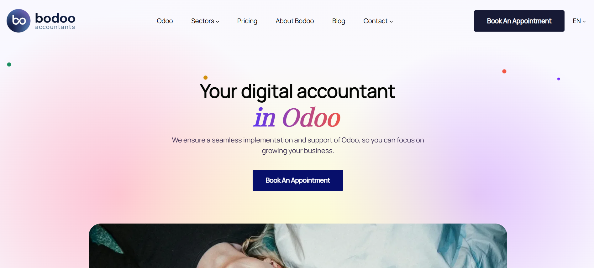

Tapasz
talatom

| Cég/Intézmény | Időszak | Pozíció/Szak |
|---|---|---|
| ELTE | 2025-2028 | Programtervező informatikus szak |
| Creative Finance | 2025 március | Erasmus+ gyakornok |
| Capture Group | 2024-2025 | Tesztelő gyakornok |
| SZÁMALK-Szalézi | 2023-2025 | Szoftverfejlesztő és tesztelő szak |
Mérföldkövek
Jelenleg az Eötvös Loránd Tudományegyetem BSc hallgatójaként mélyítem el elméleti tudásomat az informatika és a szoftvertechnológia területén, miután a SZÁMALK-Szalézi Technikum szoftverfejlesztő és tesztelő képzésén megszereztem a szükséges gyakorlati alapokat és szakmai szakképesítésemet.Szakmai tapasztalataimat a Capture Group gyakornokaként alapoztam meg, ahol strukturált tesztesetek kidolgozásával és a fejlesztőkkel való szoros együttműködéssel járultam hozzá a szoftverminőség javításához, majd Ghentben, a Creative Finance-nél egy nemzetközi csapat tagjaként fejlesztettem webes e-számlázó alkalmazást, szem előtt tartva az európai szabványokat

Projektek
A videó leírása
Bemutatjuk a GoFindMeow webalkalmazást, amely egy macskamentő alapítvány platformja az elveszett és talált cicák nyomon követésére. A kezdőlapon a menhely munkájával és a korábbi sikertörténetekkel ismerkedhetünk meg. A beépített interaktív térkép színkódolt markerekkel mutatja az aktív bejelentéseket, melyekre kattintva azonnal láthatjuk a cicák legfontosabb adatait. Új bejelentés pillanatok alatt tehető: az űrlapon elég megadni a helyszínt, az állat állapotát, színét és mintáját, majd feltölteni egy fotót. A rendszerben kártyás nézetben is böngészhetünk az esetek között. Egy-egy macska profilját megnyitva részletes információkat kapunk, és a beépített kommentfunkcióval azonnal segíthetjük is a közösségi információcserét. Az alkalmazás reszponzív kialakítású, így mobiltelefonon, útközben is zökkenőmentes és kényelmes felhasználói élményt nyújt.
A ghenti Creative Finance-nél töltött nyári gyakorlatom legmeghatározóbb feladata a Bodoo weboldal teljes körű, egyszemélyes kivitelezése volt. A projektet önálló fejlesztőként terveztem és építettem fel, kiemelt figyelmet fordítva a technikai keresőoptimalizálásra (SEO). A tudatos tervezésnek köszönhetően a webhely már a publikálást követő rövid időn belül kimagasló eredményeket ért el a keresőmotorok rangsorában.
A fejlesztési és publikálási folyamat lépései:
- SEO-fókuszú weboldalépítés és kódstrukturálás
- Webflow-ból exportált forráskód manuális optimalizálása és integrálása a helyi Git-tárhelybe
- Verziókövetés Git Bash segítségével, majd automatizált publikálás GitHub Actions munkafolyamatokon keresztül
